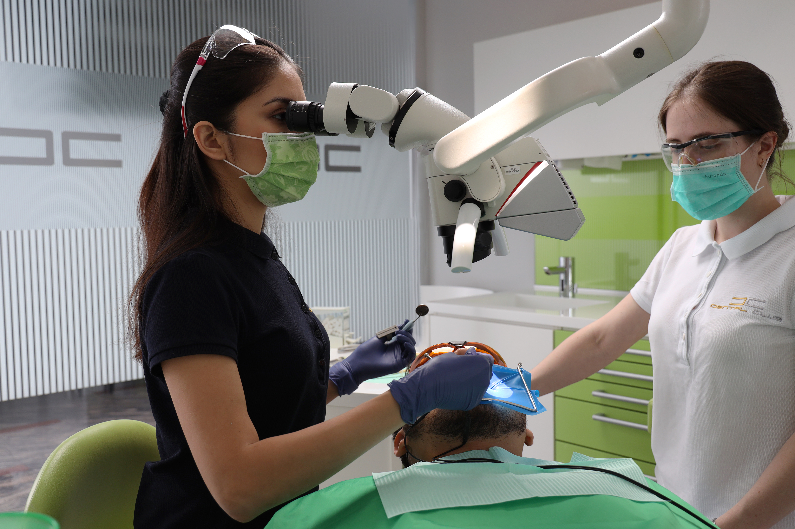
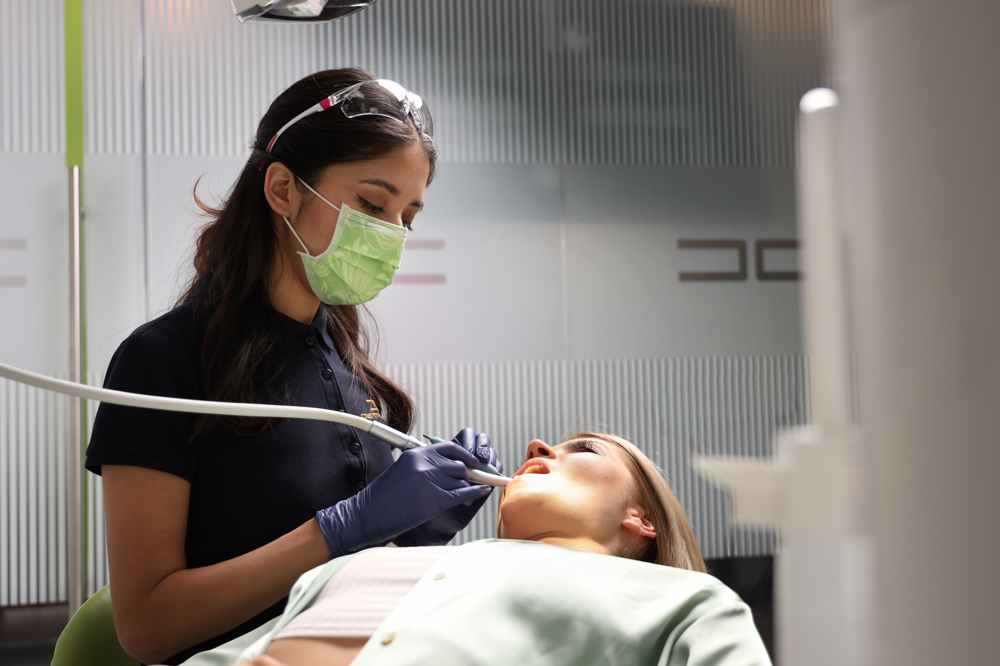
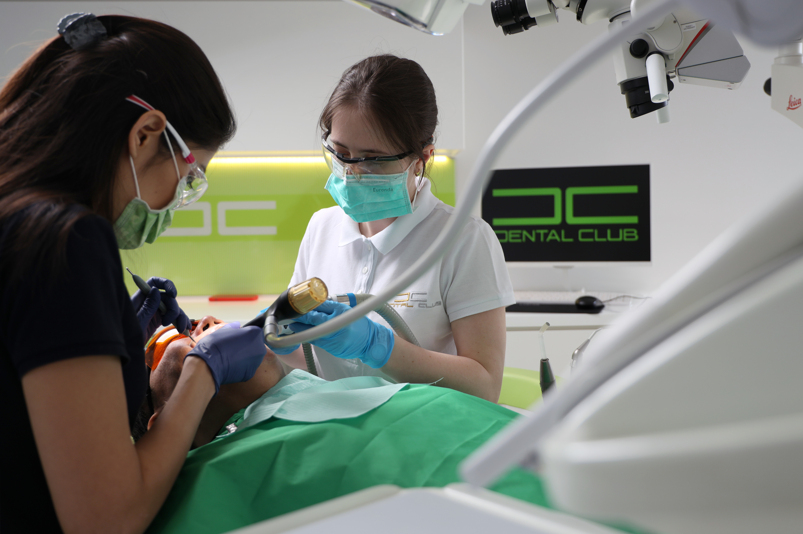
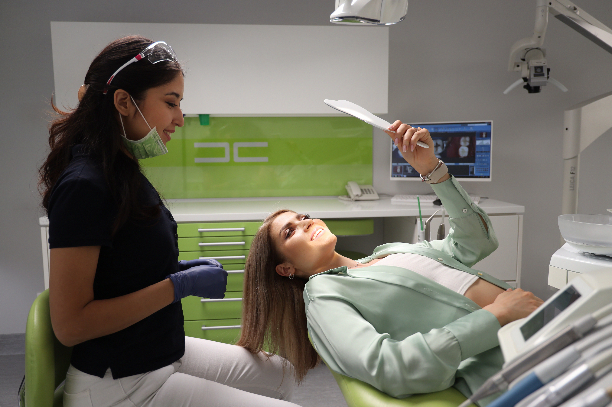
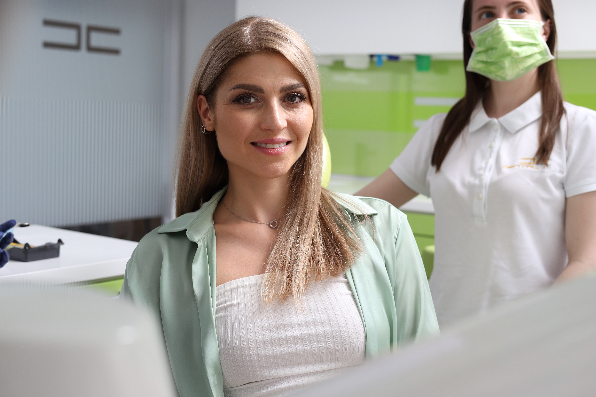
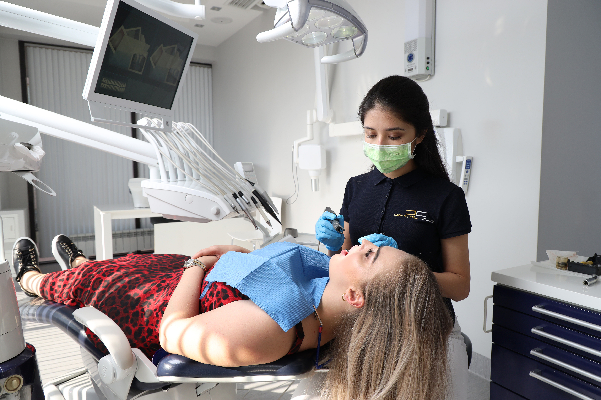

ТЕРАПИЯ
Терапевтическая стоматология - раздел медицины, занимающийся диагностикой и лечением болезней зубов, околозубных тканей и слизистой оболочки полости рта.


ЛЕЧЕНИЕ КАРИЕСА
Наиболее частой причиной обращения в стоматологию является кариес. Это поражение твердых тканей зуба, которое при отсутствии лечения может привести к возникновению воспалительных осложнений со стороны пульпы и периодонта. После тщательной диагностики, для восстановления зубов устанавливается два варианта реставраций- прямая, с помощью пломбировочного материала и непрямая: керамические вкладки, накладки.


В Dental Club всегда проводят лечение с применением специальных оптических увеличителей:
Дентальный микроскоп Leica и бинокуляры Carl Zeiss.
Для прямых реставраций используются лучшие немецкие пломбировочные материалы от фирмы Ivoclar.
Высококачественные инструменты от компании LM (Финляндия) позволяют нам добиться высоко-эстетичного результата, который не отличить от естественного зуба.
Вкладки и накладки изготавливаются в нашей лаборатории из таких материалов, как: оксид циркония, IPS. E-max, керамика.
Под такими реставрациями не возникает вторичный кариес и они прослужат значительно дольше пломб.

Этапы лечения кариеса (пломбы)
1-ое посещение
- Обезболивание
- Препарирование кариозного процесса и удаление старых реставраций
- Снятие слепка
- Изготовление временной пломбы
- Пришлифовка и полировка временной пломбы
2-ое посещение
- Обезболивание
- Удаление временной пломбы
- Обработка вкладки и полости зуба
- Фиксация вкладки на композиционный цемент
- Пришлифовка и полировка
